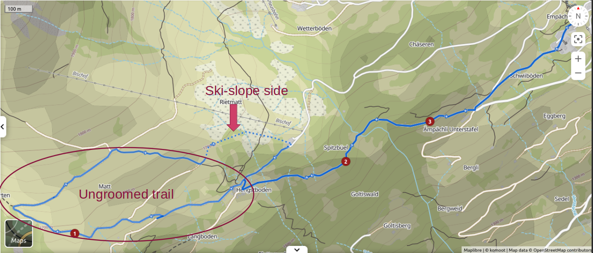

Bischofalp Winter Hike
Summary
- Trail: 5km long, 340m altitude change, medium
- Starting point: Bischofalp Parking
- Route details: Schweizmobil 992
- Additional details: Webcams, Cable Car Schedule, etc.
Take the Elm-Ämpächli gondola to reach the trail's starting point. The majority of the trail is meticulously groomed, requiring snowshoes only for the occasional ungroomed section.

Revel in the breathtaking scenery, but exercise caution as strong winds can be present. The route is well-marked with distinctive pink signs. Venture into the Freiberg Kärpf, Europe's oldest wildlife conservation area, and traverse open, sunlit terrain toward the wildlife observatory. Along the way, you'll encounter signs marking protected areas.
Passing alongside a ski slope, the path eventually leads to the Matthüttli hut. A brief sojourn through the forest concludes the journey, swiftly bringing you back to the Bischofalp cable car.

{kind=link}
{kind=link}
{kind=link}
{kind=link}
{kind=link}
Contact: love.outdoor.freedom@gmail.com